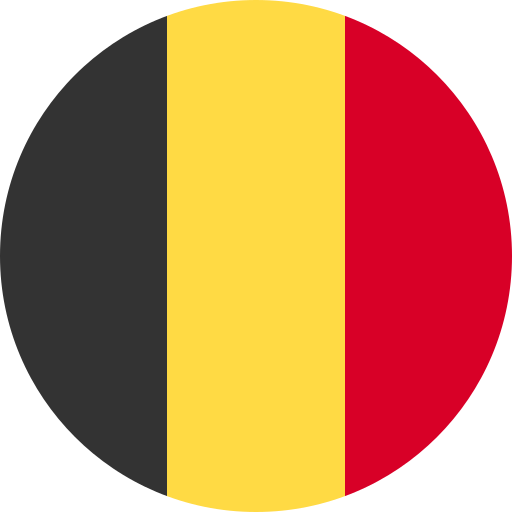
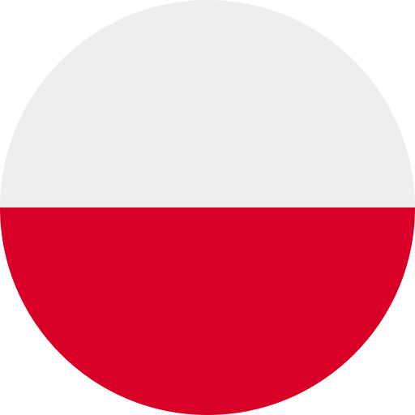
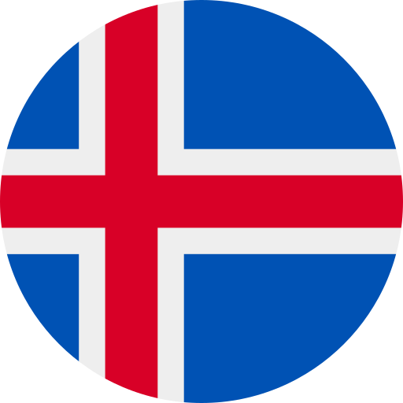
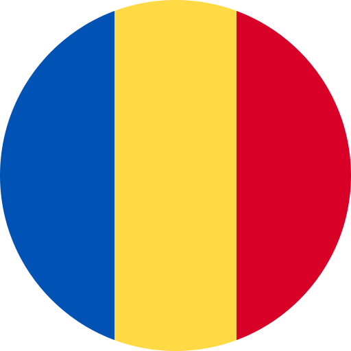

Ranking
Qualification ranking by recorded seed; this is not final tournament placement. Lowest time shown by default. Expand a player’s times to see every result in ascending order (lowest first). Times use M:SS.hh, assuming 60 fps; hover a time for its raw value.
| Seed | Player | Country | Best time | Status |
|---|---|---|---|---|
| 1 | M-J | 1:46.55 · 2 times
| ||
| 2 | MARQ | 1:49.35 · 2 times
| ||
| 3 | TONI | 1:50.20 · 4 times
| ||
| 4 | CASUALLY | 1:53.20 · 3 times
| ||
| 5 | PASCAL | 1:55.10 · 3 times
| ||
| 6 | ELIWA | 1:55.73 | ||
| 7 | KRISTIĀNS | 1:58.47 · 8 times
| ||
| 8 | TOLSTOJ | 1:58.92 · 4 times
| ||
| 9 | JESPER | 1:59.50 · 3 times
| ||
| 10 | SHUICHI | 2:00.98 | ||
| 11 | FRANKNWAGN | 2:01.57 · 2 times
| ||
| 12 | ANDERS | 2:02.62 · 2 times
| ||
| 13 | MAIWINGKOS |  | 2:05.12 · 3 times
| |
| 14 | NITSREK | 2:06.52 · 2 times
| ||
| 15 | SV | 2:06.70 · 3 times
| ||
| 16 | DOBREEE |  | 2:08.52 · 2 times
| |
| 17 | Miiirps | 2:08.73 · 2 times
| ||
| 18 | GUNTER | 2:19.77 · 2 times
| ||
| 19 | ROCCORICCI | 2:19.95 · 2 times
| ||
| 20 | MADS | 2:23.40 | ||
| 21 | IIVARI | 2:23.82 · 3 times
| ||
| 22 | DYST | 2:25.60 | ||
| 23 | SANNENNAS | 2:26.10 · 4 times
| ||
| 24 | NIZUNA | 2:28.43 · 2 times
| ||
| 25 | PERNILLE | 2:29.93 · 4 times
| ||
| 26 | JAN | 2:32.78 · 4 times
| ||
| 27 | BENMULLEN |  | 2:38.03 | |
| 28 | SWIDR | 2:40.47 · 2 times
| ||
| 29 | PANCAKE | 2:48.25 · 4 times
| ||
| 30 | VICKYLOTTA | 2:48.27 · 3 times
| ||
| 31 | ANA |  | 3:13.10 · 2 times
| |
| 32 | LUCY | — | ||
| 33 | AVERTRIS | — | ||
| 34 | ESKE | — | ||
| 35 | MS. DROP | — | ||
| 36 | HEZZULI | — | ||
| — | badguy | — | Disqualified | |
| — | badguy2 | — | Disqualified |
Bracket & results
Tournament bracket
Recorded winner: MARQ
Round of 32
Completed Miiirps4
Miiirps4
DOBREEE1
Completed JESPER 4
JESPER 4 NIZUNA2
NIZUNA2
Completed MADS0
MADS0
MAIWINGKOS4
CompletedANDERS4 IIVARI2
IIVARI2
CompletedPERNILLE2 GUNTER4
GUNTER4
CompletedSHUICHI4SANNENNAS0
CompletedNITSREK4 ROCCORICCI1
ROCCORICCI1
Completed FRANKNWAGN4DYST2
FRANKNWAGN4DYST2
Round of 16
CompletedM-J4Miiirps3
CompletedTOLSTOJ2JESPER 4
Completed CASUALLY0
CASUALLY0
MAIWINGKOS4
CompletedPASCAL4ANDERS2
CompletedMARQ4GUNTER1
Completed KRISTIĀNS2SHUICHI4
KRISTIĀNS2SHUICHI4
CompletedTONI4NITSREK0
Completed ELIWA4FRANKNWAGN2
ELIWA4FRANKNWAGN2
Quarterfinals
CompletedM-J4JESPER 1
CompletedPASCAL2
MAIWINGKOS4
CompletedMARQ4SHUICHI0
CompletedTONI4ELIWA0
Semifinals
CompletedM-J3
MAIWINGKOS4
CompletedMARQ4TONI3
Final
FinalMARQ4
MAIWINGKOS3
Progression follows recorded winners. Empty feeder positions represent byes or unavailable earlier matches.
Additional matches
Match data unavailable
Match data unavailable